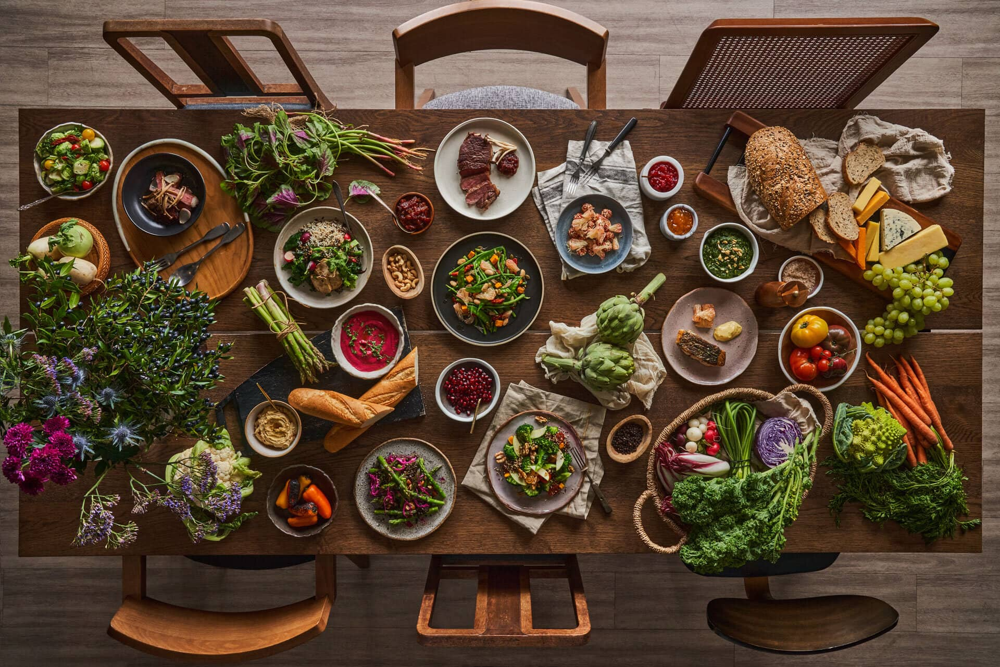

¿Quiénes Somos?
EcoFood es una organización comprometida con la reducción del desperdicio alimentario mediante iniciativas educativas, tecnológicas y prácticas cotidianas. Somos un equipo diverso formado por expertos en medio ambiente, tecnología y desarrollo comunitario, unidos por un propósito común: generar conciencia, educar y activar soluciones para enfrentar este desafío global.
¿Qué Hacemos?
Educamos
Ofrecemos materiales educativos gratuitos y talleres comunitarios para fomentar prácticas sostenibles en el consumo de alimentos.
Conectamos
Promovemos alianzas entre productores, comerciantes, consumidores y comunidades para reducir excedentes y aprovechar al máximo los alimentos disponibles.

Innovamos
Utilizamos la tecnología para desarrollar soluciones prácticas, como aplicaciones móviles, plataformas web y redes comunitarias que faciliten la reducción del desperdicio alimentario.
Visión
Nuestra visión es un mundo en el cual los alimentos se valoren y aprovechen responsablemente, en donde la seguridad alimentaria esté garantizada para todos y el desperdicio alimentario sea mínimo, generando un impacto positivo significativo en el medio ambiente, la economía y la sociedad.

Misión
Nuestra misión es sensibilizar y movilizar a las comunidades locales y globales sobre la importancia de reducir el desperdicio de alimentos, brindando herramientas prácticas, educativas y tecnológicas que permitan a las personas adoptar hábitos sostenibles y responsables para mejorar la seguridad alimentaria y proteger el medio ambiente.